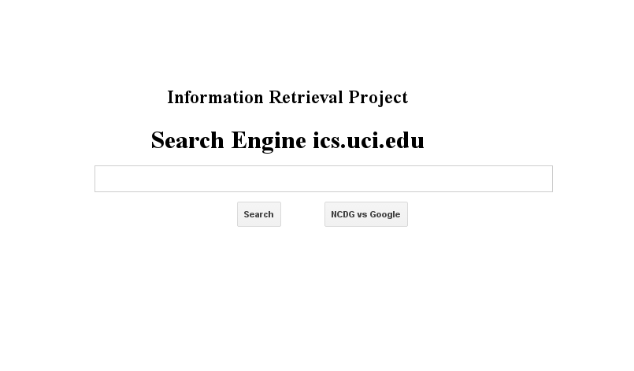
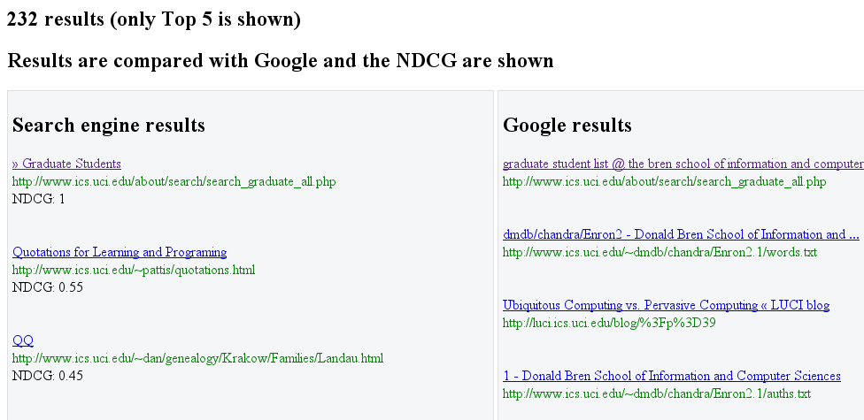

Search Engine for ics.uci.edu
This project is a search engine for ics.uci.edu. It is based on a Crawler first step and then access to indexed data.
The main characteristics are:
- Crawler4j library is used for crawling the ics.uci.edu domain.
- Google Gson library is used for comparing the same query results with NDCG metrics.
- Inverted indexes are used to speed up the searching
- Berkeley DB is used for persistence (crawled data and indexes).
- PageRank algorithm is used to rank the results.
- A web interface is provided. A simple Servlet operates the search requests.
Source code: https://github.com/jfuentes/IRWeb
Authors: Joel Fuentes & Han Ke.
Main page:

Results page:
